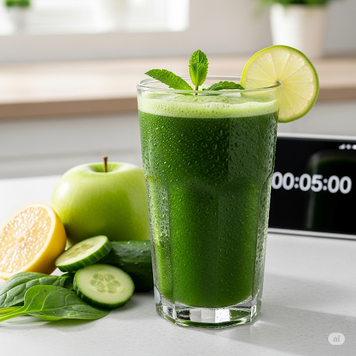

Bebida Suco verde refrescante ⏱️ 5 min 👩🍳 Fácil 2 copos  Ingredientes 2 folhas de couve 1 maçã verde 1/2 limão (suco) 200ml de água gelada Gelo a gosto Modo de preparo Bata tudo no liquidificador até ficar homogêneo. Coe se preferir mais leve. Sirva com gelo.